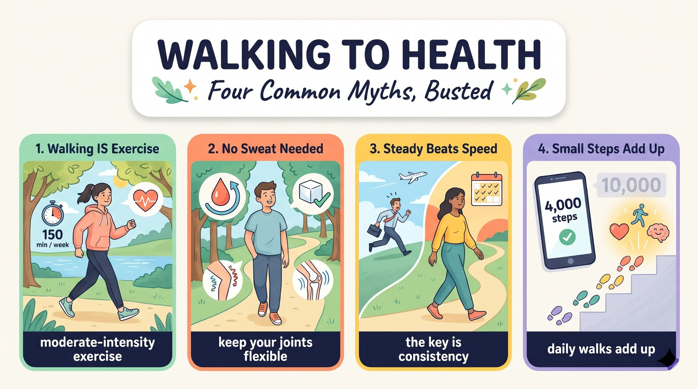

一般認為只有高強度鍛鍊才有成效，很多人也同意；走路真的足以維持健康嗎？
only hard workouts bring real results支持者指出跑步每分鐘燃燒的熱量比走路多，高強度訓練也能更快強化心肺。
burns more calories per minute研究顯示快走屬中等強度，能帶來許多相同益處；流汗不是可靠指標，走路還能讓關節靈活、容易持續。
a form of moderate exercise雙方都有道理，但對多數人來說持續比強度重要；用舒適或稍快的步調每天走，長期累積更健康的生活。
consistency matters more than intensitywalking (S) + is (V) + really enough (C)，be 動詞 Is 移到句首成問句。
to keep us healthy 是不定詞，修飾 enough，內含 keep + O + OC。
Adj. + enough + to V（夠……可以……）；enough 在這裡當形容詞補語；keep + O + Adj.。
Is walking really enough（問句主幹）to keep us healthy?（不定詞（keep + O + OC））語塊 1（只靠走路，真的足夠）➔ 語塊 2（讓我們保持健康嗎）
議論文開頭的問句，直接把爭議拋出來。
Is walking enough?，後面背一個不定詞 to keep us healthy，說明「夠做什麼」。keep + O + Adj.：keep us healthy。Adj./Adv. + enough（old enough）；enough + N（enough time）。這裡 enough 自己當補語，直接放 be 動詞後面。
enough to V；keep + O + Adj.：keep us healthy。It (虛主詞) + is often thought (V) + that only hard workouts bring real results，and a large number of people (S) + agree (V)。
It is thought that；a large number of + 複數 N + 複數 V（people agree）；agree 不及物可單獨使用。
It is often thought that（虛主詞句型）only hard workouts bring real results,（名詞子句）and a large number of people agree.（主句二）語塊 1（一般常認為）➔ 語塊 2（只有高強度鍛鍊才能帶來真正的成效）➔ 語塊 3（而且很多人都認同這個看法）
先翻「一般常認為」，帶出反方的看法。
that：往左看 It is often thought，It 是虛主詞，真主詞是 that 後面的看法。and：左右都是完整句，連接兩個主句：第一句講看法，第二句講「很多人同意」。a large number of people 核心是 people，動詞用 agree，不是 agrees。
It is (often) thought that ...；a large number of + Ns + 複數 V。Supporters of this view (S) + point out (V) + that running burns more calories ... (O)。
more ... than walking 是比較級。
supporter of N（……的支持者）；比較對象要對稱：running vs. walking（都是動名詞）。
Supporters of this view（主詞）point out that（動詞＋名詞子句）running burns more calories per minute than walking.（名詞子句（比較級））語塊 1（支持這個觀點的人）➔ 語塊 2（指出）➔ 語塊 3 調序（跑步【每分鐘】燃燒的卡路里【比走路】多）
反方論點，先翻「支持這個觀點的人指出」。
that：往左看 point out，往右看完整句 running burns more calories ...，名詞子句當受詞。than：比較的兩邊要同一類東西。左邊是 running，右邊就要 walking，都是動名詞。A ... more N than B；supporters of N。Supporters of this view point out that ...They (S) + also argue (V) + that high-intensity training strengthens ... (O)。
argue that ...（主張）；high-intensity ↔ moderate-intensity；strengthen（使強壯）。
They also argue that（主幹）high-intensity training strengthens the heart and lungs（名詞子句）faster.（比較副詞）語塊 1（他們也主張）➔ 語塊 2 主詞（高強度訓練能）➔ 語塊 3 超車（更快）➔ 語塊 2 動詞（強化心肺功能）
反方第二個論點，先翻「他們也主張」。
argue（主張），往右看——high-intensity training strengthens ... 完整句。動詞後面接一整件事 ➔ that 名詞子句。argue／claim／point out／believe／suggest + that，後面都接完整句。argue with sb（和人吵架）；argue that ...（主張）。
argue that（主張）vs. argue with sb（吵架）。They also argue that ... 補第二個論點，結構清楚。research (S) + shows (V) + that brisk walking is a form of moderate exercise ... (O)。
that offers many of the same benefits 是 that 主格關代子句，修飾 exercise。
many of the same + 複數 N。
However, research shows that（轉折＋主幹）brisk walking is a form of moderate exercise（名詞子句）that offers many of the same benefits.（主格關代子句）語塊 1（然而，研究顯示）➔ 語塊 2（快走屬於中等強度的運動）➔ 語塊 3 順翻補充（而且同樣能帶來許多相同的益處）
However 開頭，正方開始反駁，先翻「然而，研究顯示」。
that：往左看——動詞 shows；往右看——brisk walking is a form of moderate exercise 是完整句。動詞後面接完整句 ➔ 名詞子句。that：往左看——名詞 exercise；往右看——___ offers many of the same benefits 缺主詞。名詞後面接缺主詞的句子 ➔ 主格關代，可換成 which，不能省略。
However, research shows that ...，用證據反駁。a light walk (S) + should not be ignored (V)；Since 子句主幹 sweat (S) + is not (V) + a reliable measure (C)。
how effective a workout is 是 how 名詞子句。
since 兩義：「既然、因為」（不受時態限制）vs.「自從」（主句完成式）；how 子句直述語序。
Since sweat is not a reliable measure（原因副詞子句）of how effective a workout is,（of＋how 名詞子句）a light walk should not be ignored.（主句（被動））語塊 1（既然汗水不是）➔ 語塊 2 超車（衡量鍛鍊有多有效的）➔ 語塊 1 尾（可靠指標）➔ 語塊 3（輕鬆的散步就不應被忽視）
這句從 Since 子句開始翻，先講理由「既然……」。
Since：往右看——sweat is not a reliable measure ...，現在式的事實；主句 should not be ignored 也不是完成式。since 後面沒有過去時間點、主句不是完成式 ➔ 「既然、因為」。Since 2020, he has walked every day.（主句現在完成式）。how：of 後面的名詞子句，how + effective + a workout is，直述語序。
since：既然（任何時態）／自從（主句完成式）。Since A, B should not be ignored.Walking (S) + also keeps (V) + the joints (O) + flexible (OC) and is (V) + easy to do consistently (C)。
easy to do 是「Adj. + to V」。
keep + O + Adj.；be easy to V（主詞是 V 的受詞：walking is easy to do）；consistently 修飾 do。
Walking also keeps the joints flexible（主幹（keep + O + OC））and is easy to do consistently.（動詞片語二）語塊 1（走路還能讓關節保持靈活）➔ 語塊 2（而且很容易長期持續）
正方第三個論點，從主詞「走路」順著翻。
and 連接兩個述語：keeps the joints flexible 和 is easy to do consistently，主詞都是 Walking。keep + O + Adj.，flexible 描述關節的狀態。be easy to V，主詞 walking 其實是 do 的受詞（do walking），所以 to do 後面不能再加 it：✗ easy to do it consistently。
keep + O + Adj.；S is easy to V（S＝V 的受詞）。people (S) + are (V) + more likely to keep exercising (C)。
who start small and build up slowly 是主格關代子句，修飾 people；be likely to V；keep + V-ing。
be likely to V（可能會）；keep + V-ing（持續做）；build up（逐漸增加）。
More importantly,（轉折副詞）people who start small and build up slowly（主詞＋who 關代子句）are more likely to keep exercising.（動詞＋補語）語塊 1（更重要的是）➔ 語塊 2 超車（從小目標開始、再慢慢增加的人）➔ 語塊 3（更有可能持續運動下去）
More importantly 先翻「更重要的是」，帶出最強的論點。
who：眼睛往左看——名詞 people；往右看——___ start small and build up slowly 缺主詞。左邊有人、右邊缺主詞 ➔ 主格關代 who。and：在關代子句裡，連接兩個動作 start small 和 build up。are。主詞 people 是複數，所以用 are 不用 is。
be likely to V；keep + V-ing；people who ... 主詞後找真正動詞。More importantly, ... 放在論點最後，把最強的理由留到最後講。both sides (S) + have (V) + a point (O)，but consistency (S) + matters (V) + more than intensity。
have a point（說得有道理）；In my view＝In my opinion；matter more than。
In my view,（介系詞片語）both sides have a point,（主句一）but for most people,（對等連接詞＋對象片語）consistency matters more than intensity.（主句二）語塊 1（在我看來）➔ 語塊 2（雙方都有道理）➔ 語塊 3（但對大多數人來說）➔ 語塊 4（持之以恆比強度更重要）
結論段第一句，In my view 先翻「在我看來」。
but 是議論文結論的經典用法：both sides have a point——承認雙方都有道理，顯得客觀。but for most people, consistency matters more than intensity——說出自己的立場。have a point（有道理）；In my view／opinion。In my view, both sides have a point, but ...Walking at a comfortable pace (S) + is (V) + a realistic choice (C)。
or a slightly faster one when we feel ready：one 代替 pace，when 引導時間副詞子句。
one 代替前面提過的單數名詞（pace）；動名詞主詞單數 is；slightly + 比較級。
Walking at a comfortable pace（動名詞主詞）—or a slightly faster one（破折號插入語）when we feel ready—（when 時間子句）is a realistic choice for everyday life.（動詞＋補語）語塊 1（用舒適的步調走路）➔ 語塊 2＋3 調序（或在準備好時稍微加快步調）➔ 語塊 4（是日常生活中切實可行的選擇）
這句主詞很長，中間還夾破折號，先抓主幹「用舒適的步調走路是……選擇」。
Walking at a comfortable pace is a realistic choice for everyday life.，主句很清楚。or：連接 a comfortable pace 和 a slightly faster one，one 代替 pace，避免重複。when：往右看 we feel ready 是完整句，時間副詞子句「當我們覺得準備好時」。
one 代替單數名詞；slightly + 比較級。these daily walks (S) + add up to (V) + a healthier life (O)。
in the long run（長遠來看）↔ in the short run；add up to + N。
In the long run,（副詞片語）these daily walks add up to（主幹）a healthier life.（受詞）語塊 1（長遠來看）➔ 語塊 2（這些每天的散步會累積成）➔ 語塊 3（更健康的生活）
最後一句，In the long run 先翻「長遠來看」。
these daily walks add up to a healthier life。In the long run：長遠來看，議論文結尾常用，和 in the end（最後）、over time（長期下來）意思相近。add up to：把「每天的小散步」連到「更健康的生活」，呼應議題「只靠走路夠不夠」——答案是夠，只要持續。
in the long run（長遠來看）；add up to + N。1. 請選出最適合填入 (1) 的字：
It is often thought that ...：虛主詞 It。2. 請選出最適合填入 (2) 的字：
than。3. 請選出最適合填入 (3) 的字：
that。4. 請選出最適合填入 (4) 的字：
Since（既然）。5. 請選出最適合填入 (5) 的字：
add up to + N：累積成。6. They argue that high-________ training strengthens the heart faster.
high-intensity training：高強度訓練。7. Walking keeps the joints ________ and is easy to do every day.
keep + O + Adj.；關節「靈活」→ flexible。8. In my view, both sides have a ________, but consistency matters more.
have a point：說得有道理。9. People who start small and ________ up slowly are more likely to keep exercising.
build up：逐漸增加。10. 下列哪一句文法正確？
11. 下列哪一句文法正確？
12. 「長遠來看，這些散步會累積成更健康的生活。」最佳英譯是：
in the long run；add up to + N。13. What do the supporters of hard workouts point out?
14. Which is NOT a reason the writer gives for walking?
15. What is the writer's final position?